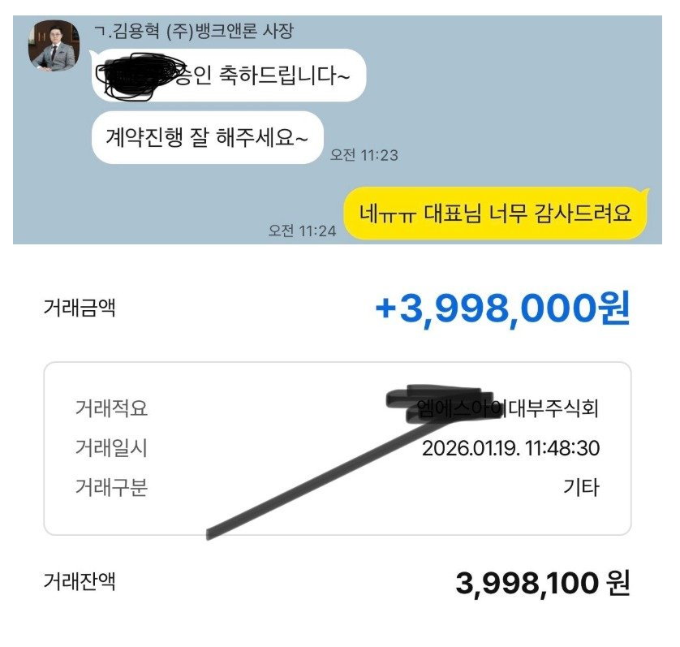
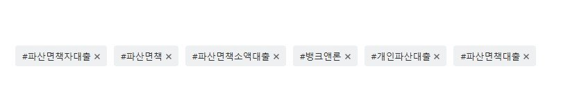

[파산면책자대출 ] 파산면책자대출 드디어 받았습니다!
대출은 작년 11월부터 계속 알아보고 있었습니다
파산면책 된지는 1년 되었지만, 재직기간도 3개월로 짧은편이고, 통장 거래내역이 많지 않았습니다.
신용점수는 100 / 350 이었구요
또, 거의 다 부결되어서 진행 할 수 있으면 다행인 상황이었습니다.
뱅크앤론에 문의하기전에
개인회생, 개인파산 대출 중개해주는곳이라면
거의 다 문의도 해보고 대출시도도 해봤었는데
최종적으로는 전부 부결이었어요.
그리고 나서 이번달 초에 김용혁 이사님께 문의드렸는데
제가 채무불이행자 등재 되어있는게 있다고 알려주시더라구요
다른 업체에서는 그런말 전혀 듣지도 못했어서
부결이 나더라도 대출 과다 조회도 해보고 했는데 말이죠..
만약 알았다면 무리하게 진행 하지않았을텐데..ㅠㅠ
다행스럽게도 채무불이행 등록이 삭제되어서
바로 문의드렸습니다
이현섭 과장님께서 서류 준비 도와주셨구,
김용혁 이사님께서 직접 접수 도와주셨어요
처음에는 다 부결이 나서 엄청 불안하고 미치겠더라구요
근데 마지막에 한군데에서 소액이지만 대출이 나왔습니다 :)

지금 당장 생활비가 부족해서 걱정이 많았는데요
당분간 걱정없이 지낼 수 있을거같아요
3개월 정도 뒤에 추가 대출도 문의 드려볼예정인데,
다른 업체에 괜히 문의해서 부결 나지 않게,
앞으로도 계속 쭉 ~ 뱅크앤론에서 대출받고 관리하려고 합니다
개인파산면책자는 개인회생면책자랑 다르게
신용도도 바로 오르지않고, 가능한 업체가 많지않은데
왜 인증된 업체에서 진행해야 하는지
오늘에서야 다시한번 느꼈습니다.
정말 감사합니다 :)

https://cafe.naver.com/cityman88/309951